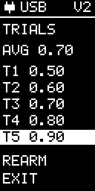
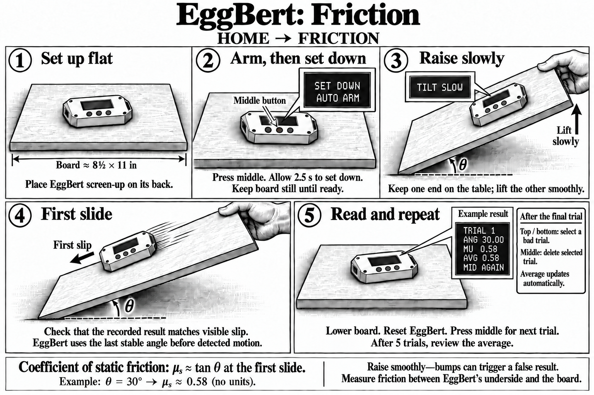

Friction
Current controls
- Start with the ramp low and press middle to arm.
- Set EggBert down during AUTO ARM. At TILT SLOW, increase the angle slowly until it slides.
- Read the trial angle, MU and average. Middle starts another trial; bottom opens the trial list.
In the list, top/bottom select a trial, REARM or EXIT. Middle deletes the selected trial or chooses REARM/EXIT. Up to five trials are retained.
Top: return HOME from idle or result. Middle: stop while armed. Friction uses low-g on both versions.

The experiment illustration below shows an earlier screen arrangement. Follow the current controls above.
